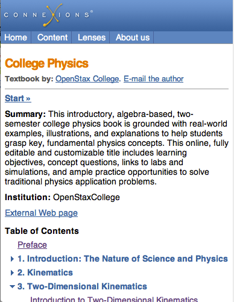
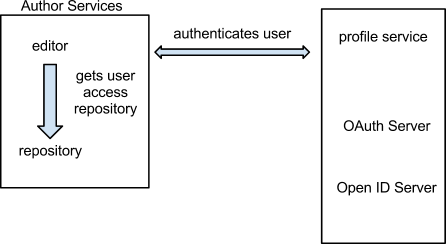

Connexions Rewrite Design Meeting Notes
Connexions Rewrite Design Meeting Notes
These are the notes of the design meetings for the CNX Rewrite project. The meetings are held Monday and Wednesday at 10 am CT.
August 20, 2012
API Discussion
Reviewed Phil's document
Phil thinks the unpublish repository API should be a subset of the Published content repository API. Ross and Ed disagreed. The point is to make the best API for each repository, not something generic from the start. if it is possible and logical for them to be the same, fine, but that should not be a design goal.
Kathi agrees with Phil about the API.
Ross is concerned that the Unpublish Repo API will be too heavyweight for its purposes. There was a discussion about how the unpublished repo should be saving parts of HTML instead of an intire document. Ed brought that discvussion to a halt because it has already been decided that we are storing the HTML on the file system which means we should be saving the entire document in version 1.0.
Zip vs Multipart
Ross suggested we use multipart messages rather than a zip file. Kathi brought up the fact that her team had trouble implementing multipart when testing the Sword interface from her OERPub tool. Zip files are easier to deal with on the command line.
Publishing a module that references another module
We talked through the problem of a user publishing a module that has links to an unpublished module. The Published repo will return an error if this happens. Having the editor do that check and allowing the user to select to publish both modules at once is not a version 1.0 operation.
Api should return some structure that has URLs to published content.
Paul suggested we use UUID which would solve some of the rewrite problem. We will discuss this further on Wed.
August 15, 2012
API - Publishing - Resource Handling - Push/Pull
Mapping
Mapping Alternative
Key Concepts & Concerns from Team Members:
Two options: either REPO does little work to look within HTML. A mapping document would be needed to convert resourses with URLs. Other options: remove mapping document and change url's within HTML[editor side]
Resources Concepts & Concern Cont.
.zip Payload Case
Epub/PDF
Summary/Homework
Design Topic Monday August 20th
August 6, 2012
Data URI
client side image storing. The goal was to simplify image upload by sending image bits via html to server
Homework was to test Phil's editor by dragging and dropping images into editor
Testing Phil's Editor Feedback:
Discussion of performance of editor in multiple browsers. Pro's and Con's mentioned.
Ed (tested with Bio Images):
Ross:
Similiar testing issues in Firefox
Paul:
Data Model
Phil:
Kathi:
Conclusion
Needs Further Discussion
Trello Cards do not reflect completed tasks for Sprint 4
Homework
August 1, 2012
Data URI Discussion
Phil: https://en.wikipedia.org/wiki/Data_URI_scheme
Phil is suggesting we use Data URIs to store images and other files in the HTML. This would be used in the editor, but possibly not in the Web View.
Pros
Cons
It is unclear how it will perform with some images like the ones from Biology or Physics. Phil has a working prototype at http://oerpub.github.com/oerpub.editor/. The team will test it and report back on Monday.
Workspace
Discussion about Workspace design at http://connexions.github.com/designdiscussions/AuthoringServicesDesign.xhtml
There should only be 2 states: editing and published.
Phil: only batch operations allowed in Workspace; to edit an individual part, must use editor.
Ed: Maybe, when you mouse over module, collection, etc, display the Roles/Metadata options.
How do we combine all of the options? Perhaps just list them all?
Import/Export function done at the Workspace. Done by the Add button.
Folders - should have drag and drop. Phil: maybe in v2 or etc, you can drag a module onto a collection, and it can become part of the collection. Could also drag a collection or module into a folder.
Remove links to Metadata annd Roles. We should have a toolbar with a list of operations.
Add 2 columns
Ed will update the mockup to reflect the changes.
July 30, 2012
Web View Frameworks
It would be nice to have all WebView strings in one place. Does any of the frameworks offer this?
If CNX name is changed to OpenStax, we only need to go to one place to change name.
Internationalization
We should be building in hooks, but we don't have to implement anything yet (OSF funding).
We need a way to do automated translation, even if we don't do too much translation.
For languages we don't support, we can have the author provide the strings.
From Michael: http://jinja.pocoo.org/docs/extensions/#i18n-extension
Discussion about if having Strings in one place is important. Decided it was not a showstopper.
Authoring Tools Design
The notes below are a discussion of the design located at http://connexions.github.com/designdiscussions/AuthoringServicesDesign.xhtml
Editing properties
Popup comes up on the side, so the option of ignoring the list is there.
Limit items in sidebar to items you can select from dropdown or radio buttons
Any editing happens in the editor itself.
Editing Math
Kathy would like us to use ASCII math (Siyavula uses it). MathJax should handle it.
Phil shared an editor example: (use Firefox) http://wysiwhat.github.com/Aloha-Editor/src/demo/math/
Import popup
we want to simplify to one page.
User does not have to select a file type. Type is determined by system after upload.
By allowing people to attempt to import items we do not support, we can see what we need to support in the future.
NO SITE ERRORS SHOULD BE DISPLAYED TO USER.
Ed will update the mockup to remove type selection.
Publishing
Do not display checklist on publishing page.
Need to show license agreement.
Should validate items that are not complete before allowing publishing
After publishing, user will be taken back to workspace where he or she can view the status of content.
Ross's idea: Check for errors before the user tries to publish. Perhaps show errors when user tries to save.
Roles
We want to eliminate having 2 sections. Should be able to add people, and eliminate existing roles.
If user adds someone using gmail address, we search for...? With OpenID, we don't see their email, we send them an email, and they must click the link, login, and confirm.
Exisiting users must authenticate.
We need an option to not display author's email on content. Perhaps use OpenStax idea, and have option to email author, but don't display email.
Add Files
Current mockup - Need to simplify add pages. User should only be taken to one page. Perhaps include a preview.
Any uploaded file must be referred to. We currently have too many authors linking to untouched items.
Updating images: there's a benefit to having an image have a new name- solves caching issue.
We should eliminate uploading files as a separate step from creating a figure or a link
The upload should be an option when creating these elements
Import will allow bulk upload if the items are referenced in a document in the zip.
Phil suggested we look at Data URI for image storage: https://en.wikipedia.org/wiki/Data_URI_scheme
Metadata
Click button to display field or dropdown to add another.
Those who care about internationalization didn't really care about language variants.
Keywords
Summary should be required.
Logging
Things to log
Ed to add logging info to design doc
July 25, 2012
Web View Test Review
Michael reviewed his work on the Web View test
Test Examples
Pyramid with Jinja2 using Bootstrap
Django with Jinja2
HTML5 with jQuery
Best Choice
Some discussion about using Mustache: http://mustache.github.com/
Decided that there was no need to do everything client side since the content body, header and footer can be delivered staticly from cache.
Collection view could have continuous scrolling where additional module content is added as the user scrolls down.
July 16, 2012
CNX Tech Team Tasks
Ed shared this spreadsheet
These are some of the things we need to move forward on CCAP and the Rewrite
Meeting Options
Perhaps twice a week.
Tasks would be assigned.
Meetings could be longer.
We would have to each other accountable to their work.
We need to decide the path of building components as a team. Parts need to work well together.
July 10, 2012
Frameworks
Flask is a one man framework, considered a microframework; maybe we shouldn't use it for a long term because things will get messy.
Majority of pyramid works on app engine, as does Django.
UUIDs should be unique for each module. Tons of processing - can be done in request, or tell request to capture request, handle request, and complete response cycle by generating UUIDs.
We don't want to return to a user on a publish unless we can guarantee that it will be published.
If branching and merging is an absolute requirement, the proper metaphor is GitHub, not Google Docs.
Google Docs - here is a new ID at a creation point.
At minimum, we must provide tools to split one module to create 2. modules.
Ross: Expose everything as collections; if the content is split, it becomes a module. If someone else's content is referenced, it can become a collection. If that content is edited, a copy is derived.
How does this affect our immediate implementation?
The author tool can't give out IDs that the public repository will serve, unless they communicate. Revamp. If too isolated, then we lose those ease of reuse (unique feature)
Paul: use single Json document that contains content and subset of existing metadata, and add to subsequent metadata... allows authenticated user to save over the top of the document; a separate index per user will be stored, containing a list of documents the user has rights to, tags, and a location of collections.
We hope to continue using the pop bead model.??
Google Docs is a good metaphor for writing books that have little interaction.
Paul's link :https://speakerdeck.com/u/kennethreitz/p/flasky-goodness
If we give up ancestry trails and plain text, we basically give up the merging and branching option.
If we're constantly rebasing, shouldn't be a problem.
We don't need to support every little editor change.
Phil: Make everything a section, and depending on the amount of nesting, you end up with chapters and books and etc.
How does this design affect our existing URLs?
Don't expose "Edit Module" or "Edit Collection".
Paul: put a parent and child into a module.
Could there be various ways to leave a section?
Collection: and organization of the nodes (smaller than modules) in order. Would always have wrapper around them , not exposed to user.
Smash everything into sections! and store in unpublished repository.
We don't have to expose the sections to the general public; we should always wrap it.
July 9, 2012
Structure Review
WebView - helps with downloading large versions of transformed content. Not native form of author's content. created by transformation services.
Will provide UI for getting a browser-friendly html format of content. Bookmarking, Lenses, Similar, Search, Browse, etc will go through WebView.
Authoring Services - contains logged in author interfaces ; most likely will be separate site. This is what we want to finish first.
Instead of trying to graft new authoring services onto existing site, perhaps simply include an option to try the "new beta version". New code doesn't provide enough information to be useful.
Right now, we just want to merge client side javascript editor. We should be able to confine editing to one tab.
Functionality of Current Editor Interface
Do we need a way to link to content that is not a collection? Not immediately.
Type and Strength dropdown - unique feature.
Perhaps we should have a PDF preview for the chapter to avoid having to view the entire book. Chapter is usually set of modules.
Vision for Preview feature : We can wrap the module in a single module collection. Even just a small bit of content would appear as a collection.
We need to store a list of people who can edit with the content.
Metadata regarding ACL should be able to be modified without changing the version number.
Publishing would require interaction with repository to give authoring permission.
Publish new version and Editor in Authoring Tool are 2 separate permissions.
Paul's prototype should hopefully be ready for the 17th.
July 5, 2012
Workspace
How many versions of an unpublished document can you have?
Can 2 documents with exactly the same content have different metadata? Yes.
Solution - only have the document in one place. One unpublished copy, one set of sharing relationship.
Michael
Starts Monday July 9th
Integrate new editor into existing plone.
Plug in conversion.
Investigative work in web frameworks. same tasks in jquery, Django (only templating),
Workspace Folders
Folders are not shared; only documents are shared.
Saving a document - if you have permissions, you are making changes on that same URL. If not, you have derived a copy and are saving at a different URL.
There is no need to derive a copy if one has permissions.
Version number is not a part of the URL.
Folder copy should not be a part of the URL- complicated. It's just an organizational system.
Folder is unique to the person; the document is one copy.
Workspace should not be in the URL either; it comes with one being logged in.
Titles are allowed to collide. There is a unique name and version number.
July 3, 2012
Editor "Version 1" Features
We will support the most popular CNXML elements
Kathi wants 1st release in October?
API for Unpub Repo
Paul's rough draft:
Metadata will be stored in a microdata format in the html. See June 26 notes
Collxml will be stored similarly. Also see June 26 notes.
Perhaps we can create a button for the metadata editor. Phil is currently working on one.
If Editor is stand alone, Html will be stored...?
Editor will be stand-alone: put Javascript file in, configure, editor is there, and work is saved when one presses save. Needs no other parts to be configured.
Editor, workspace, and repository should not be tied together. The editing of Metadata, Roles, etc. complicates this.
Our main goal - create an editor that can be embedded into any site.
To have stand-alone Editor, we need to have Workspace API to perform workflow tasks. This coule be a lot of work. Is it worth it?
Ed will create a draft of Editor, Workspace and Unpublished Repository specs before next meeting on Thursday.
July 2, 2012
Where will Different Components Run on Production?
Authoring Services
Web View
Published Repository
Authentication Services
Logging
Transformation Services
June 26, 2012
Editor Repository Discussion Continued
Lengthy discussion on the question of storing metadata in HTML or outside of HTML. It was decided to store the user details (name, email, etc.) outside of the HTML. It will be referenced using a User ID.
How will we store metadata
My Stuff: associated with a user id
Decisions
Module HTML - store on file system with path in DB
media - store on file system with path in DB
collection - store on file system with path in DB
workspace - store in database
June 25, 2012
Michael's Tasks
He starts on July 9th.
He could work on
Development Queue
Sprint 3 - this ends on July 9.
Queue Fix - This covers a couple of changes to the Queue Tool for PDF, EPUB generation. They include moving the Queue to a separate server and modifying the transactions so that they are shorter.
PDF space - The PDF database which stores PDFs, EPUBs, ZIPs, etc. has gotten so large that it will not pack on the production database server. The fix involves moving all of the file storage to the server harddrive and removing the PDF ZODB file.
Chuck PDF fix-dependent on OpenStax College treatment. This is dependent on the OSC PDF fix. They need to be rolled out together. Phil should code the OSC fix this week.
Items that need to be Developed
Facebook Like button - Facebook has changed something and the button is no longer working
Google + button - Google has warned us that they are making changes so we need to do likewise so the button continues to work.
MathJax 2 upgrade - This will improve math support in IE.
License page in iframe. Needs to happen before end of GSoC
Nagios tweak. Make sure monitoring notifies us before things break.
After the things in the development queue, our priority should be Facebook/Google+ buttons, License page and then MathJax upgrade. The Nagios Tweaks will be an ongoing thing.
Authoring Repository Decision
Probably won't have more than 100 people on it at once.
What we need to save in the repository:
What to store in OAuth server
metadata about the person
preferences for authoring - this will be used at a later date.
June 21, 2012
Intro
We need to make a checklist of functioning elements to give us a record of progress, and flesh out reqgit puluirements. Ed will create these and add them to the design documentation repository in Github.
Editor
What is happening with the public repository implementations (repository being coded by Google)?
Early demo: http://light-demo.appspot.com. It does not do much and has no CNX content. Google is still working on it, but we have not had an update in about a month.
Our plan: map API to Appcale so we have an alternative if the data issue is not resolved.
We want to be able to edit in our editor and publish it to the published repository.
Workgroups
We want a setup similar to Google Docs:
Current Plan
We're currently working on Authoring Tool:
We need to finish
The Edtior will be added to Plone once it has enough functionality. The Editor and the new logging will be added.
We want to be able to track the logging and view how people are using the components.
How does the editor communicate with editor repository (when we press save)? - tinyMCE saves entire file via API.
Options for Editor After Phase 1
The collaborative model will be stored in the repository.
Comments should be done with a third party tool, as long as they're stored with ids.
We want to be able to see what has been done since last visit to document.
We need to decide whether we're using Source Control (something like Git) or not.
Is it better to attach all the extra components to the document, or simply use workflow? Hooking things to document complicates things.
Source Control doesn't find structural differences.
Minimum change for now: when editor modifies, don't overwrite; create another version.
Track changes is infinitely messier than a diff tool; we want to use a better version of diff tool.
We want to be able to indicate where changes where made,where text was inserted or deleted.
We will build in the saving of the versions (we're not building an archive, however); show changes of the session, not for each individual change.
Initially, we can save html. Then eliminate lots of the scope creep.
If we want to be able to see or edit a doc that is already being edited at the moment, we will need something along the lines of what Flatworld Knowledge (essentially a sort of Track Changes)
June 20, 2012
Sprint 3 Planning (Cont'd)
Drag and Drop feature issue: TinyMCE is not passing on mouse event to jquery.
TinyMCE may need to be customized beyond writing new plugins. If we need to customize the tinyMCE code itself, we need to try and do it in a way that is maintainable and updatable. This could be difficult in JavaScript.
Drag and Drop feature is found in other editors for blockish contents; i.e moving slides, images, etc. We want to have it in tinyMCE to keep the user from pasting which adds complexity.
Possible suggestion - use a tree view of the document; able to drag and drop title and label to different sections.
We need to decided on one editor. One that is similarly licensed to our current editor to ensure that it is usable with out other code.
We also need to fix copy and paste feature. Even if we code the drag and drop. Users will use copy and paste. It's what they know from other editors.
We don't want to lose bullets, bold, or italics when the user does copy and paste. We may lose sections. Things lost should be lost completely and not partially.
Cross site scripting issue
Browser is not responding to 200 response it's receiving or returning incorrect response. Possibly because different domains are being used. Should be addressed in a different Sprint.
This needs to be sorted out because we will want the option of subdomains in the future.
June 19, 2012
Sprint 3 Planning
Sprint Dates: June 20th- July 9th
Architecture: diagrams will be made explaining all moving parts.
No bidding or estimating necessary on Phil's cards.
Paul's Card: Implement an OpenID consumer within the flask app allowing any openID server to authenticate a user to the unpub repo
Estimate: 5.
This is just the web server asking who user is, then giving appropriate login.
Updating the repo will go into a message queue.
Editor will know that changes are saved : Ajax will pick up and post.
Paul: Implement a robust message queue for all REST changes that will affect unpub repo; Migrate repo functions to become 'listeners' on message queue
Do we actually need a message queue today?
Yes eventually, solves storing issues, and testing repo.
Only publishing will be in parallel.
Implement, but don't use if part of Plone.
What kind of guarantee do we want so that when user saves, it actually saves?
Advantages of messaging queue - robust, no code necessary, all questions answered. Can be turned off.
UseCase and Architecture should be addressed before message queue.
Message queue = Sprint 4.
Authentication service: is it time to populate with existing users?
We don't necessarily need an OpenID client/server as well as OAuth client/server.
Need client side and authorization to be completed first.
Paul's Card: Implement an OpenID server
Estimate #: 13.
EIP: takes too much time to save. No safe way to fix without messaging queue. could be faster.
TinyMCE: there will not be much validation.
Save as html because that's what was written. Only go to CNXML if switching editors.
Should have outsiders test new editing before release to ensure significant improvement.
New repo needs to be much faster.
New editor will be faster: Asynchronous. Saving will take longer, but editing will be allowed faster.
Only integrating new editor with Plone; not the remainder of the authoring tool.
Able to log what people are doing in the editor to have a better idea of what users are doing.
Adding new javascript editor that will work with Plone authoring tool.
Rhaptos module editor is the unpublished repository in Plone.
June 18, 2012
Articles
Ed does not agree with everything in the articles he shares with the team. They usually contain something interesting that we might want to discuss. An example is the JavaScript article:
http://blogs.adobe.com/bparadie/2012/05/07/the-pew-pew-manifesto/
What was interesting was
What we need to be careful about is reinventing the wheel. Don't write things in something like CoffeeScript if it is just as easy to use JQuery for the same thing.
Phil brought up the fact that he is using CoffeeScript (http://coffeescript.org/) for the editor. CoffeeScript is a language that is compiled into JavaScript. This lead to a discussion about introducing new technologies.
Introducing New Technologies to Project
Discuss technology as a group before choosing one, so everyone can be aware of which tools are being used, and why it is being used.
It was suggested that Code Reviews can be used to keep an eye on new technologies being added to the project. Code review is very important. CoffeeScript is not statically typed, so everything must be named clearly.
How to handle code reviews
Send comments by email rather than using github tools?
We want code review, but we don't want to grill each other. Do we need to broadcast mistakes on Github.
It's possible to fix things on github and comment privately, but doesn't help the learning process.
Having multiple people view your code can be very beneficial.
Ex: somebody is working on a branch for a sprint, they check each other. Use the branch RSS feed.
Don't want outsiders putting bad comments on code, and etc. Intimidation.
Delicate comments can be emailed.
Most comments can stay on the public record.
Sprint
Tomorrow: Sprint 3.
Dedicate extra time to planning meeting to get cards defined and times estimated.
Document Decisions
Need to document design official decisions.
Probably will be put in github. Similar to project page. Link to design meetings and official desicions.
Monitoring
Example: space issue. Need to monitor in advance so we can know how to react
Fountain:
Monett: has signaling limitations.
Nagios: used by CNX, currently adequate. perhaps in need of refreshing.
CNX also using Munin.
Can continue to use Nagios and Munin. Should be able to monitor in graphite to view trend over time.
June 14, 2012
Tablet Web View
Should be the same as web-view, ideally.
"Hidden" features - not hidden, but must be clicked to be viewed.
Left: table of contents, lenses portlet, recently viewed, tags
Table of Contents should be hidden.
Perhaps as a default, hide table of contents, and have an option to always display table of contents.
Is it necessary to have a separate page for the table of contents, or just go to the first page of the collection?
Make table of contents discoverable rather than hidden.
If we go straight to the first module, you can't tweet the collection.
Most users view the content as a holistic book, thus tweet about the collection rather than module.
Top and bottom social buttons = redundant. We should choose one.
If a user likes a content halfway through, he or she will want the social buttons right on the screen instead of having to scroll somewhere.
Metadata/Reuse and Cite:
Lenses: perhaps make a popup or a button. Doesn't need to be displayed unless clicked. http://cnx.org/lenses
Perhaps a button that incorporates all popups: Lenses, portlets, tags.
Don't want layered popups. Lenses logos will take up too much space.
Images: use a Facebook approach: when an image is uploaded, 4 sizes are created.
Recently Viewed
Perhaps design in a fashion similar to Amazon: Other users viewed this...
When you first look on a module, should have the display of all content features , but a one click button hides everything so the user can just read and view the content.
How important is Recently Viewed? Should we redo or remove?
Hover text.
We need to decide to use either text or icons, but not both.
for example, Google: very short, concise text at the top of the screen in the black bar.
Collection Web View Summary:
1. No Collection page. Go straight to the first module.
2. Table of Contents with hideable option.
3. When in collection context, social buttons point to collection.
4. Collection metadata- popup that has twisties for separate sections. popup triggered from collection context header.
5. Related material button: combine lenses and tags portlets, display both module and collection info.
6. Move Recently Viewed to search/browse; do not display while viewing content.
7. Apply #6 to Similar Content.
8. Eliminate text by top level content action buttons; be consistent with text or icons for actions within a given context. See Google Docs when a document is open.
June 13, 2012
Functionality of Each Web View
-what should the user see and be able to access on each device
-Feature phone view: Very basic. No wasted space. simple header. see collection and contents. back to collection means going back to collection.


Current m.cnx.org for feature phones
can we have a link to TOC at the bottom? Another option is adding link right under the authors.
Title, blue CNX bar, module, authors, content, glossary at the bottom
Next and Previous options should be seen.
Is the browse option necessary? No one uses it.
We should remove the View Lenses option.
Search will be supplied from Google.
ask Ross about access logs on m.cnx.org.
Smartphone View
Similar to Feature phone version.
Tabs at the top.
Larger header.
Table of Contents behaves in the same way that the web site version does; contains twisties (little blue triangle)

Current m.cnx.org for smartphones
How helpful are the tabs? Frequently do not work.
We can remove About Us page, perhaps.
Are Lenses and Browse useful on a smart phone?
We should make site more "smart-phone-esque". It should look like an app rather than a webpage.
Most people are not finding content by browsing. Using a large search bar would be more efficient.
Books do not have unique covers - people get confused. All collections look the same.
If authors were allowed to choose a random image from their module or collection as the cover. If not, icons will be assigned.
Phase 2 suggestion: Cover Creator.
Need to make table of contents more readily available (slide out or pop out). That way we can be able to use more ajax and javascript.
Must be able to scroll.
Look into Bootstrap. http://twitter.github.com/bootstrap/
Tablet View
Should be very close to the full site.
Little to no changes should be made.
Master/Slave option: chapter TOC on one side, module on the other when in landscape.
don't display table of contents. Perhaps use a button.
We want content to main display of the page.
Recently Viewed, Similar content,
Perhaps we should change to "most people who looked at .... also looked at"
Is similarity still viable? How accurate?
Current algorithm- performance issue (sometimes completely wrong), inefficient. Accuracy issue.
Search engine will use html from tablet, so we need enough links in html so that site is seen as optimally interconnected.
Google is capable of indexing the ajax.
If Google indexed entire site, it wouldn't matter if Recently Viewed was retrieved.
June 12, 2012
Web View
Have been planning to use Pyramid, which comes with TAL. Marvin thinks Django might be a better way to go -- more support, google app engine. Big sites running Django -- https://docs.djangoproject.com/en/dev/topics/templates/ big websites run by Django: http://stackoverflow.com/a/1907034/756056
What is in the webview?
Might want to consider architecting the webview so that it can eventually be coordinated better with the epub and pdf versions -- same numbering and similar styling. Teachers and learners always ask for this and struggle with how different they are. Phil provided some notes about such which is included at the bottom of the post.
Web templates and policies:
Want to come up with a set of policies and review processes for the web templates do we want:
Phil’s notes about making the formats more congruent: Same CSS for Different Formats
When collection context is known we could inject "counter-reset: chapter 3, section 2, exercise 12, custom-exercise: 45" so numbering is correct.
https://github.com/philschatz/oer.epubcss allows CSS "features" to be "baked into" formats that don't normally support them. For example: epub1 doesn't support counters (for numbering sections/exercises), Some browsers don't support collating elements (move-to).
The CNXML to HTML doc has some notes in it: https://docs.google.com/document/d/1E2RGJf0kHdgWOd2590VGmv9YixgmDFo-gX3xlbLGgM0/edit?pli=1
Some editing/authoring stuff that came up in the conversation
June 11, 2012
User Security (from Article)
-Open ID people
-force a password change on users
- currently, passwords stored in Plone in hash.
- old users will have option of keeping or changing password. Encouraged to change.
- knowing that encrypted with Sscrypt is not a problem.
-Use countdown. “Change password in the next X days”.
-eternal nag - encouraged to change password every time one logs in.
-Users:
1. use existing Plone hash (after examination)
2. Run through scrypt with 128 bit salt
-all passwords handled through the same path, just with different origins
-use same code whether accessing through Plone or open ID user.
-same module from same code base; different paths
-1 code base on 1 server because on Open ID.
- Extra amount of time, with some users using hash 1 and some using hash 2.
-If not all users change passwords, there will be a small delay.
-Slow transition from scrypt/hash to scrypt/plaintext.
Incorrect Login
-currently, when password is incorrect, we return id and no password. We shouldn’t return any information.
-If we open up as Open ID repository, we need to be as secure as possible.
-At Chase, url didn’t contain code path.
-attacker would have url that exposes code path.
-need to verify origin of request. If session ID isn’t in database, request dropped. Prevents Man in the Middle attack.
-Nothing is passed as unencrypted parameter.
-SSH and strongly encrypted, no hints if fail would be better than current setup.
-Blog: store salt per hash per user.
-Login Page:
1. use SSH
2. If a failure, do not expose correct ID.
-storing salt with the password=not wise. Will however, prevent rainbow attack.
-If password hashed with user = system salt stored with user salt.
-Must use strong algorithm. If one can attack database, can attack salt.
-Standard - keep salt next to hash.
-Storing salt next to hash prevents attack against all, but not against one individual.
-Security groups.
-Does not matter where salt is stored. Salt for every user = protected.
-Store a salt for each hash, but not in a separate location.
Web View
-need to discuss Pyramid/ TAL.
-allowed to write Python expressions.
-difference between Web View and everything else?
-want Web View to display only
-logic can be in any random template because of TAL.
-html stored (editable version) not the same as html rendered to the browser.
-need a strict policy regarding template allowances.
June 7, 2012
Users
-convert all user IDs to open IDs
-user will be stored in the repository/OAuth server
-structure of profile service : has open ID server and OAuth server
- does editor get permissions from profile service? Editor repository does.
-once server validates source, editor uses own repository.

-storing a profile service for everyone with a login.
-Users stored in...?
-Ask Arjun about not storing users with public content.
-Domain component that may store users.
Article: Password Storage
-http://throwingfire.com/storing-passwords-securely/
-Hacker News top 50 and top 100: super interesting.
-Author suggests many ways to hash and store passwords.
-don’t do linkedin.
-Read for Monday to discuss which Python package to use.
Editing Math
-Rich wants to be able to handle LaTex directly in editor.
-Libraries can be used to convert LaTex to MathML.
-In editor - LaTex can be used; for publishing, must use MAthML.
-don’t want to edit in MathML.
-Should we attempt to keep math imported with LaTex? aka preserve LaTex?
-there exists MathML with text. Math mode in LaTex? Not supported.
-Gustov and American Institute of Math: have textbooks in LaTex, convert to XML and HTML.
-how to clean up in Math mode of LaTex? perhaps “grab math mode?”
-Trollix used for LaTex; Mathjax is for editor only.
-Who knows LaTex? Bryan knew best. May need outside users. involve community.
-Need a list of projects that need assistance from outside users in community. Use GitHub
-Phil: much of content comes in from Word Importer,and MathML is most common in repository. What do we use for editing MathML?
-Is it possible to convert from MathMl to LaTex?
-What if we used MathML, but created annotations in LaTex?
-Need to be able to edit small portion instead of viewing whole document.
-System should support content math.
-Support LaTEx = more potential support for content math.
June 6, 2012
Intro
- Kathy wants to use design and interface ideas for editing and converter (API)
-scheduling a call with TinyMCE to discuss how new system works with core. Consider inviting someone from Peer to Peer.
-Sprint is scheduled for the end of July in Berlin.
Queue
- problem: zip and pdf generation no longer separate; takes too long to generate zip, which is then deleted, leading to pdf failure. when LaTex is used, also fails. locks zip.
-necessary improvements:
locks for complete zip
system integrated less tightly
testable dependencies before running, ask for reenqueue
items published all at once, trigger events simultaneously
ability to freeze in queue, remove from queue, move to the end of queue
Complete Zip Changes
- store in cache when generated
-store files on file system instead of ZODB = quicker access.
PDF Changes
- check if complete zip exists
-if not, re enqueue itself
-get complete zipform from cache
-launch scripts (need API) instead of Zope.
- possibly launch for a shorter time?
-Json format will be the dictionary of dependencies.
Queue Changes
-improve transactional behavior
-add button to remove something from processing queue
Physics Issues
-cannot fix wrapping issue without break
-”=” stretchy over bar sign. Phil’s code change is to detect when trying to replace carat.
Sociology Issues
-Table of Contents: “...0” should be removed. (Phil.)
-Index: 1st page won’t start until 2nd column because of dif tags(sp).
-Phil made index span top of page = issue resolved.